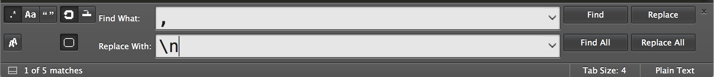
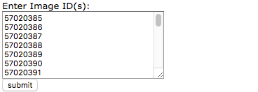
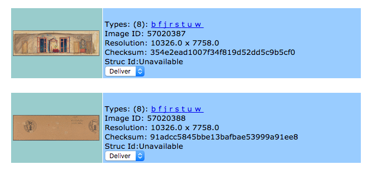
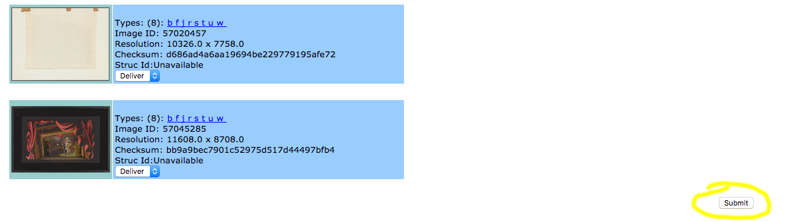

Image Get Walkthrough
Last updated: March 22, 2018
Overview
Image Get is a web application that offers a limited front-end view into the long-term Isilon storage that houses all access derivatives and archival master files created by DIU staff. Image Get displays the number and types of all derivatives present for a given file name and will deliver copies of S and U versions of files in the repository for staff use to a work share on Isilon Cluster D (ice.repo.nypl.org/ifs/ice/Staff).
Logging In
To access Image Get, point your browser to: http://legacylair.nypl.org/wrm/imageget/
Creating a new account can be done via the link below the Login button, but Image Get will still need to be added to your WRM account. Contact Angel Urena (angelurena@nypl.org) to have Image Get added to your account.
If you already have an account, login using the credentials supplied through the WRM system. Be sure to keep track of your passwords, as the system will ask you to change frequently.
Requesting Images
When you have successfully logged in to WRM, click through to Image Get where you will be given instructions to request single, multiple, or ranges of files by Image ID.
How to request an image(s):
To request an Image please enter the IMAGE ID and click submit.
To request multiple images please enter each image ID on a separate line:
Example:
123456
654321
789034
You may use hyphens to specify a range:
Example:
100015
100025-100034
100045
Single image and simple Image ID range requests can be entered according to the request instructions. However, if requesting multiple ranges or large numbers of non-consecutive IDs, it may be easier to copy all Capture IDs straight from a work order and reformat using a text editor to place each comma-separated ID on a new line.
To remove commas with Sublime Text:
1. Go to a work order and click Copy all Capture IDs

2. Paste (command+v) into an empty sublime text document
3. Navigate to the find menu and choose “Replace”
4. Check to make sure that the regular expression option is enabled (button with .* next to Aa)
5. Find all commas followed by a space (, ) and replace with a new line ( \n), click Replace All

6. Copy and paste into ImageGet
Pending Requests
Images that have been recently requested and are still being copied to the Staff folder for retrieval by staff are listed with thumbnails under Pending Requests.
Active Requests
Images that have been requested in the last 3 days are listed with thumbnails under Active Requests. When a request is active, S and U tif variants are available in the Staff folder.
Request Results
When desired IDs have been entered into the search field, press the submit button to go to the results page.

After submitting a desired Image ID range, Image Get will display the following information about your requested IDs:
- A thumbnail preview (T derivative) which will reveal a larger preview when clicked through (W derivative)
- Type and number of derivatives available
- Pixel dimensions of archival master file (U file), if available
- Checksum info
- Struc ID (if available from legacy metadata system Hades)

Currently Available or Pending
If your Image Get search comes back with a result that a given Image ID is currently available or is pending, the file has been delivered to the Staff folder some time in the last 3 days and should be accessible there. You will be unable to verify the individual derivative breakdown until the 3 day period has expired unless you direct your browser to the image server ( http://images.nypl.org/?id=57034976&t=w&d=0 ), replacing w with the derivative type you’re looking for).
Not In Archive
If your Image Get search comes back with a Not In Archive result, this indicates that an Archival Master file has not been uploaded for the given Image ID. However, this does not indicate whether or not derivatives of the Service Master (S File - cropped, srgb tif). have been uploaded. To check for other derivatives of a file when no Archival Master is in the repository, point your browser to the image server: http://images.nypl.org/?id=57034976&t=w&d=0
Retrieving Files
All requested images are set to Deliver by default. If you would like copies of the U and S files to be delivered to the Staff folder, press the Submit button at the bottom of the page.

All requested files will be copied into the Staff folder on ICE (ice.repo.nypl.org/ifs/ice/Staff). It’s worth noting that all requested images will be delivered to the Staff folder without the option to cancel. If large number of files are requested, all other requests will queue up behind the large request. Other users of the system may have time-sensitive needs for file retrieval, so please be mindful.
Image Get as Repo Check Tool
Image Get was created primarily as a tool to provide Repository file retrieval, but the information it provides in the process can be extremely useful as a limited Repository viewer in a quality control workflow.
Types
While the Information displayed in the Types field is relatively limited, it can provide clues as to what and when files have been uploaded to a particular Image ID. This comprehensive index for all derivative types saved to long-term Isilon storage can decode any derivative type mysteries. For instance, if you see a d derivative in your Image Get results, you’ll know that a MrSID file was uploaded for the Image ID in question (MrSID was phased out of DIU production in 2010 and replaced by jp2 for deep zoom).
Derivative Type Count
Command+F (Ctrl+F) is your friend here. If you’re repo checking files that have only been uploaded once, then you should be able to count on derivative type consistency for all requested files. This means you should be able to verify that all derivatives have been uploaded by searching for the expected number of derivatives to verify a complete upload after requesting all Image IDs on a work order. Image Get displays derivative type counts in parentheses, so a command+F search of “(8)” should count complete uploads for rights restricted material and a search of “(11)” should count complete uploads for public domain material.
Pixel Dimensions
Command+F (Ctrl+F) can also be used to check the number of archival master files from a given Image Get request if all U files are identical in pixel dimensions. Otherwise, this information is useful for determining the camera used or whether or not the master files have been cropped before upload.
Public Domain
If Q, V, and G derivatives are available for a given Image ID, the MMS item record for that capture has been given a rights profile with either a public domain, presumed public domain, or a creative commons license designation. High resolution downloads are freely available through Digital Collections for these images.
Overwrites
If there are two or more instances of any derivative type in the Image Get search results, that particular derivative has been overwritten with a newer version. The Repository is locked for all intents and purposes, so every version of every derivative type that has ever been uploaded should still be available in the database. You won’t be able to see the older version in Image Get, but this can be useful information if a file is accidentally overwritten and a repository developer is called in to revert to the original versions of each overwritten derivative.